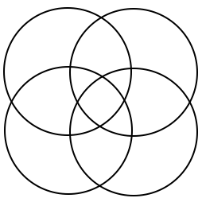

A daily notes/reflections app that centers around the concept of Ikigai to allow one to reflect on how they spend their time each day.

An app that allows people to connect and jam together in a collaborative session online.

Top-down multiplayer space shooter in the vein as Geometry Wars